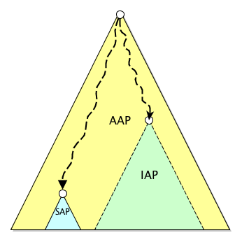
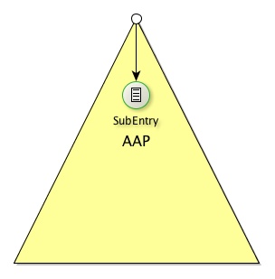

ApacheDS 2.0
Downloads
Documentation
- Basic User Guide
- Advanced User Guide
- Developer Guide
- Kerberos User Guide
- Configuration
- JavaDocs
- Cross-Reference
Support
Community
About Apache
3.1. Administrative points
An Administrative Point is an entry which is defining a starting point from which some of the four existing administrative roles will span. It’s important to understand than an Administrative Point (or AP) comes hand in hand with the associated Subentries, otherwise it’s useless.
Any entry can be defined as an AP.
In the following schema, we have depicted a DIT with three APs, the big one being an AAP, the blue one is a SAP and the green one is an IAP. They all define an area on which they are active and the dashed lines for the IAP are used to express the fact that an entry within the IAP area still depends on the higher AAP.

Directly under an AP, we will find some Subentries defining the scopes on which they are active. These scopes (one per subentry) are called SubtreeSpecification, and define the entries that can be handled by the role the Subentry is defined for.
The schema shows the relation between the AP and one SubEntry :

Administrative Point
We will describe the types of Administrative Points we are managing and the way they impact their associated Administrative Areas (AA)
We have three different kind of AP :
- Autonomous AP ( AAP)
- Specific AP (SAP)
- Inner AP (IAP)
Those three different APs are related with each other in this way :
- AAPs manage an AA as if all the possible type of SAP where declared for this area
- SAPs manage an AA with respect to one specific kind of role (Access Control, Collective Attributes, SubSchema or Trigger Execution)
- IAPs manage an AA inside another AP
- An AAP or a SAP starts at some point in the tree, and all the entries below this AAP/SAP aren’t related to any other AAP. That also means that if an AAP/SAP is created below an existing AP, then all the entries it covers are unlinked from the previous AP (except that for SAP, we just logically keep a link to the higher AP for all the other aspects but the one covered by the new SAP)
- An IAP must be included into another AP, being it an AAP, SAP or IAP. It controls a specific aspect too, as for the SAP, but it will be combined with any of the above AP.
Roles
AP are managing some administrative aspect, defined by a role :
- ACI : Manage the access control
- CollectiveAttribute : Manage the collective attributes
- SubSchema (not handled atm)
- TriggrExecution : Manage the execution of stored procedures
Subentry
Once we have defined an AP, we can add some subentries which contain the description of the administrative actions, including :
- The area this subentry covers, defined by a SubtreeSpecification, named subtree.
The SubtreeSpecification can be complex. Its grammar is given below :
<subtreeSpecification> ::= '{' <sps-e> <subtreeSpecificationComponent-e>'}'
<subtreeSpecificationComponent-e> ::= <subtreeSpecificationComponent> <sps-e> <subtreeSpecificationComponent-list> | e
<subtreeSpecificationComponent-list> ::= ',' <sps-e>
<subtreeSpecificationComponent> <sps-e>
<subtreeSpecificationComponent-list> | e
<subtreeSpecificationComponent> ::=
'base' <sps> DN
| 'specificExclusions' <sps> '{' <sps-e> <specificExclusion-e> '}'
| 'minimum' <sps> INTEGER
| 'maximum' <sps> INTEGER
| 'specificationFilter' <sps> <refinement-filter>
<specificExclusion-e> ::= <specificExclusion> <sps-e>
<specificExclusion-list> | e
<specificExclusion-list> ::= ',' <sps-e> <specificExclusion> <sps-e>
<specificExclusion-list> | e
<specificExclusion> ::= 'chopBefore' <sps-e> ':' <sps-e> DN | 'chopAfter'
<sps-e> ':' <sps-e> DN
<refinement-filter> ::= <refinement> | FILTER
<refinement> ::=
'item' <sps-e> ':' <sps-e> <oid>
| 'and' <sps-e> ':' <sps-e> '{' <sps-e> <refinement-e> '}'
| 'or' <sps-e> ':' <sps-e> '{' <sps-e> <refinement-e> '}'
| 'not' <sps-e> ':' <sps-e> <refinement>
<refinement-e> ::= <refinement> <sps-e> <refinement-list> | e
<refinement-list> ::= ',' <sps-e> <refinement> <sps-e> <refinement-list> | e
<oid> ::= DESCR | NUMERICOID
<sps> ::= ' ' <sps-e>
<sps-e> ::= ' ' <sps-e> | e
Some exemple of such subtrees :
select all the entries below the AdministrativePoint entry :
{}
select all the entries below the ou=users branch starting from the AdministrativePoint entry :
{ base "ou=users" }
** exclude all the entries below the “ou=groups” branch : **
{ specificExclusions { chopBefore:"ou=groups" } }